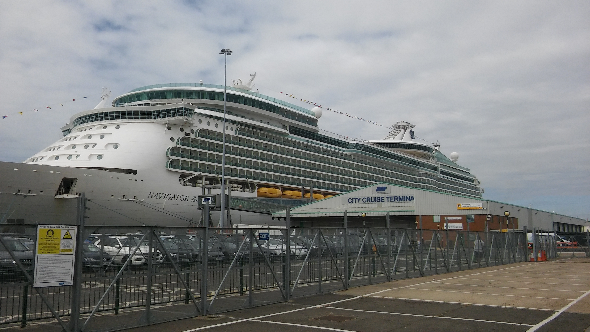
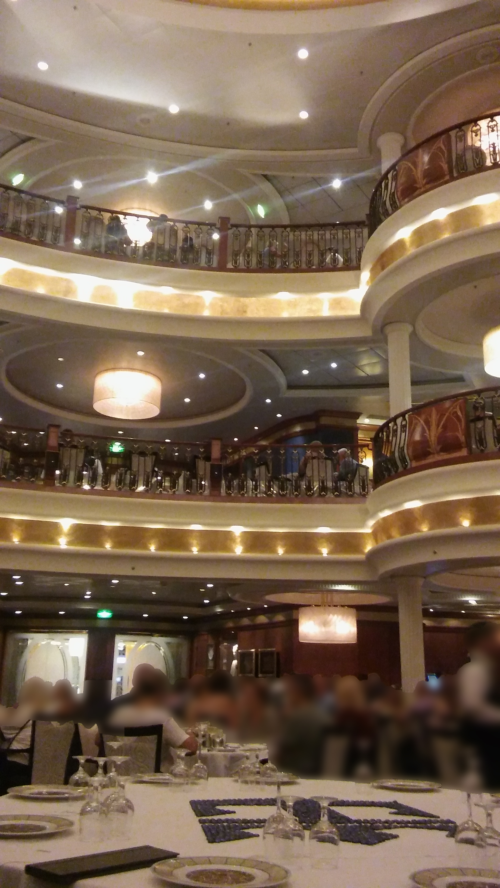
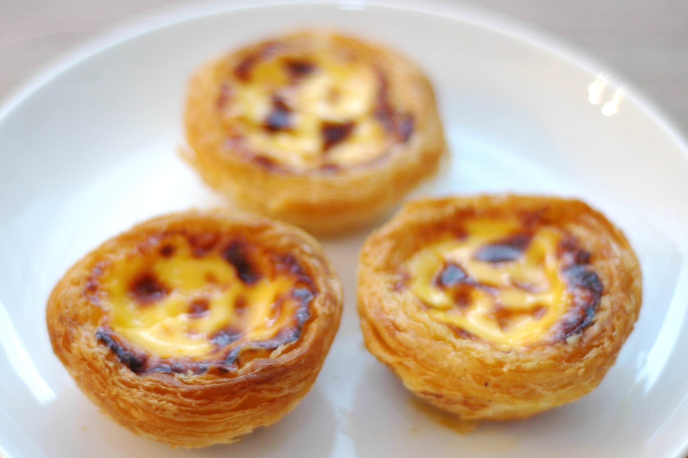
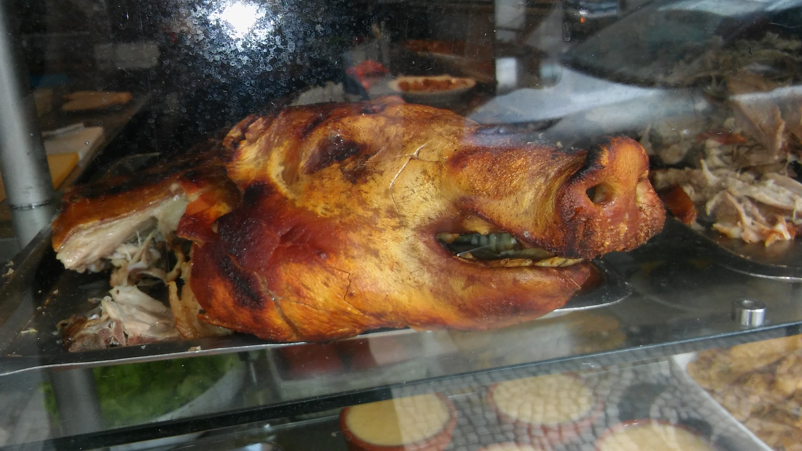
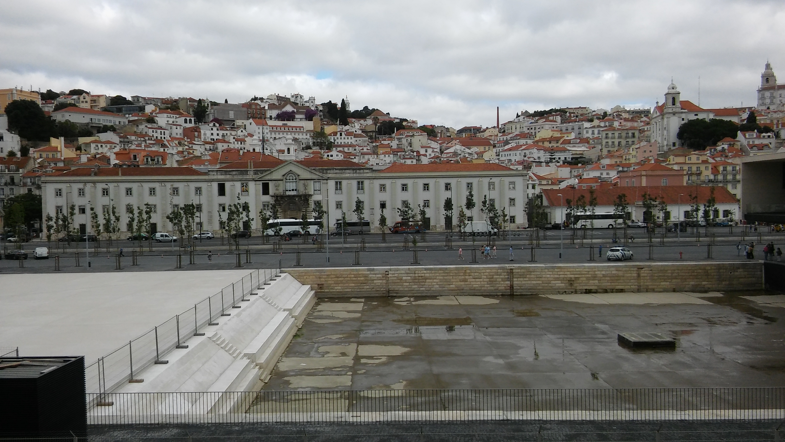
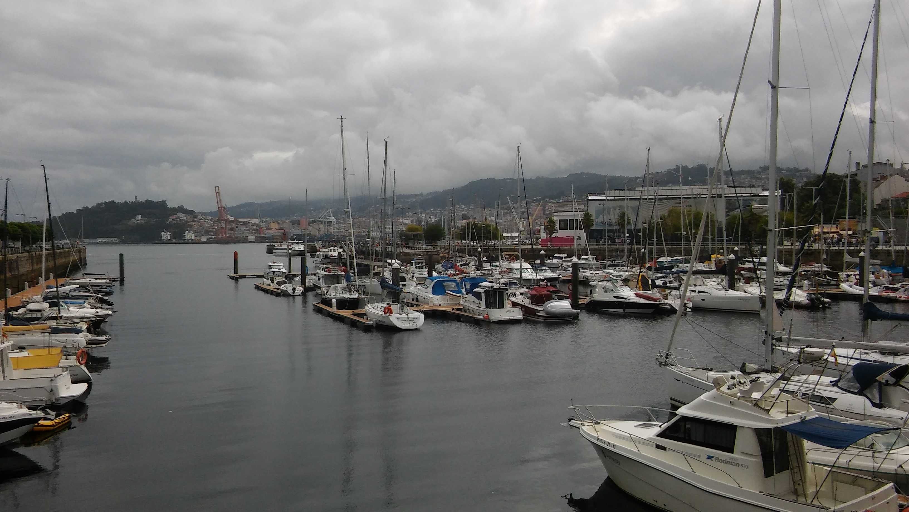
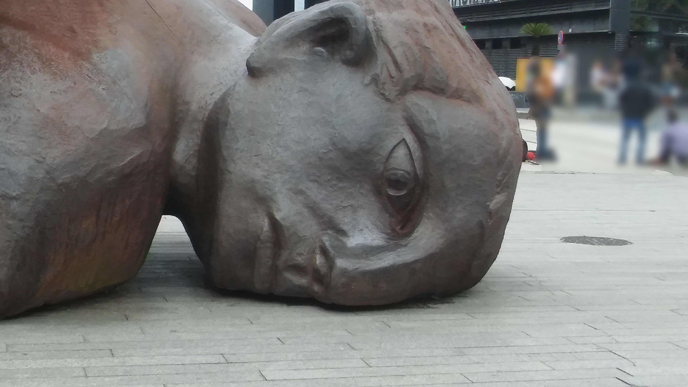

Introduction
Hey everyone, and welcome back to my Blog, in this post, I'll be explaining my cruise holiday to France, Spain, and Portugal.There will be 5 sections to this post, explaining all the different things I did on the cruise, including all the 3 locations I visited and the ship I stayed on.
Anyway, without further a do, let's start with the ship.
Sorry if the pictures in this post seem blurry or distorted, they were taken on my phone.
The Ship
The ship I stayed on was called "The Navigator of the Seas", which is a 4,000 person ship. The ship itself had 15 decks, with several places to it, including the main dining room, the Shappire Dining Room, which I'll come to later. Below is a picture of the ship when I was first walking towards it at Southampton Port.
As you can see, it's massive.
In addition to this, there was the huge dining room, where we ate dinner every night, it was called "The Sapphire Dining Room". It had 3 layers, all on different decks of the ship, Deck 3, 4, and 5. Below is an image I took of it on the first night of our stay.
 If you're wondering what the blurred parts are, they are other people in the restaurant at the time, who I've censored for privacy sake.
I was lucky enough to be able to sit right in front of the Captain's table every night, which is the massive table in the bottom of the image above. Unfortunately, the Captain only sat there on the 'Gala Night', which was on 2 nights of the cruise, where everybody dressed up in fancy clothing, like suits/dresses etc. Also, the food at the restaurant was very good, with every meal being better than the other. They served things like steak, all the way to immense chocolate brownies. Anyway, onto the locations I visited.
Destination 1: Le Havre, France
The first of the 3 destinations that I visited on the cruise was Le Havre, which is a small city in the north of Normandy in France.As you arrive in Le Havre, one of the first things you see is a volcano-like building, which was designed Oscar Neimeyer. I also saw a massive fountain on the way, not sure why that was there, but looked nice anyway. However, the main attraction of this small town would have to be the Notre Dame Cathedrale, the name being inspired from the famous novel "The Hunchback of Notre-Dame". We luckily got a chance to walk inside the beautiful cathedrale, and see some of the brilliant sites that it had inside.
Apart from that, there were also a few shops and bakeries in the main town square, Le Havre actually has one of the largest town halls in the whole of France. You can view some pictures I took here.
Destination 2: Lisbon, Portugal
The second of the 3 destinations that I visited on the cruise was Lisbon, which is the capital city of Portugal.Overall, there wasn't a huge amount of things to do in Lisbon, with the exception of a few shops. However, I did manage to find the famous Natas, or Pastel de nata, which is a egg tart, dusted with cinnamon. Here's an image of them if you're not sure what I mean.

I also met a friend along the way.

Moreover, the view of Lisbon from the ship was very nice, you could see all the tiny buildings, all looking identical, at one time.

Apart from that, Lisbon seems to be a nice place, but is not the best place for someone who likes to explore historic buildings or beautiful sights.
Destination 3: Vigo, Spain
The final of the 3 destinations that I visited on the cruise was Vigo, which is a city north west of Spain, on the Atlantic Ocean.The main attraction, and, to be honest, the only attraction, in Vigo is the massive shopping centre it has called "Centro Comercial", which translates to "Shopping Centre" in English. In that Shopping Centre, there is a nice clothes store called "Desigual", which I visited while I was in there. Also, there was free Wifi there, sooo ¯\_(ツ)_/¯.
Also, there was a nice boat yard there too, which is shown below.

Furthermore, there was a statue of a man who had apparently "fallen on his face", looks painful to me.
 If you're wondering what the blurred parts are, they are other people who were around at the time I took the photo, who I've censored for privacy sake.
Apart from that, Vigo was a nice city, with a nice shopping centre, with free Wifi too. Overall, it seems to be a great tourist with plenty to do, see, and buy.
Conclusion
In conclusion, my cruise holiday was a good one, with plenty of good memories, and not so good memories when I threw up due to motion sickness, but mostly good. In addition to that, I met a great amount of people on the ship, and ate some fantastic food along with it. Apart from that, thanks for reading!Enjoyed this blog? Why not share it?